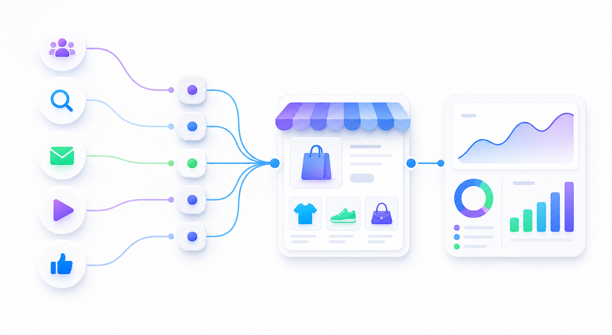

Connect the intended property
Use the Google & YouTube connection flow. Confirm the destination before adding or removing any tracking.
Shopify setup and verification
Connect GA4 through Google & YouTube, then inspect one purchase with its order ID, currency, value, and items. A page view alone does not prove that ecommerce tracking works.
Updated · Official references below

Use the Google & YouTube connection flow. Confirm the destination before adding or removing any tracking.
Check purchase parameters against a known order. Keep item value, tax, and shipping separate.
Log test visits and orders. A successful test is implementation evidence, not a new customer or a product-demand signal.
Shopify says a Merchant Center connection is not required for GA4 tag setup. It also documents automatic collection of certain ecommerce events after setup; that is not a guarantee that every custom storefront or event is covered. Verify your actual journey. [1]
Use one product and one controlled session. These are acceptance checks for your implementation, not a claim that all four events fire automatically in every store. [3]
| Action | Event | What to inspect |
|---|---|---|
| Open a product | view_item | The intended product appears in items. |
| Add it to the cart | add_to_cart | Item identity and quantity match the action. |
| Start checkout | begin_checkout | Cart items, currency, and value match this checkout. |
| Complete an order | purchase | Order ID, currency, value, and item details match the order. |
transaction_id, the correct currency, item IDs and quantities, and value. Google's ecommerce example defines value as the sum of item price × quantity, with tax and shipping separate. Do not compare that value blindly with an all-in order total. [3]Example purchase parameters only—not installation code. This illustration has two $20 items, $5 shipping, and $3 tax. The item value is $40, not $48. Never reuse the example transaction ID in live events.
{
"transaction_id": "QA-EXAMPLE-1001",
"currency": "USD",
"value": 40,
"shipping": 5,
"tax": 3,
"items": [
{
"item_id": "EXAMPLE-SKU",
"item_name": "Example product",
"price": 20,
"quantity": 2
}
]
}Use DebugView to inspect delivery, not to settle campaign attribution. Google recommends Acquisition reports for more accurate attribution analysis. [2]
purchase events collected through web streams, not app streams. That does not prove you have only one sender. Empty or reused IDs can also undercount purchases. [4]No. Shopify's GA4 setup instructions explicitly separate tag setup from connecting Merchant Center. [1]
Not yet. Inspect an order's purchase event and its parameters. A visit is only one part of the acceptance check.
Confirm debug mode, the selected device and property, and analytics consent before changing the installation. DebugView is not a substitute for checking the integration's delivery method. [2]
The setup route and event rules above were checked against these references on September 30, 2026. This guide has not been independently validated on your Shopify store.
Keep installation checks and attribution checks separate. Build one clean link and record the test before relying on the report.